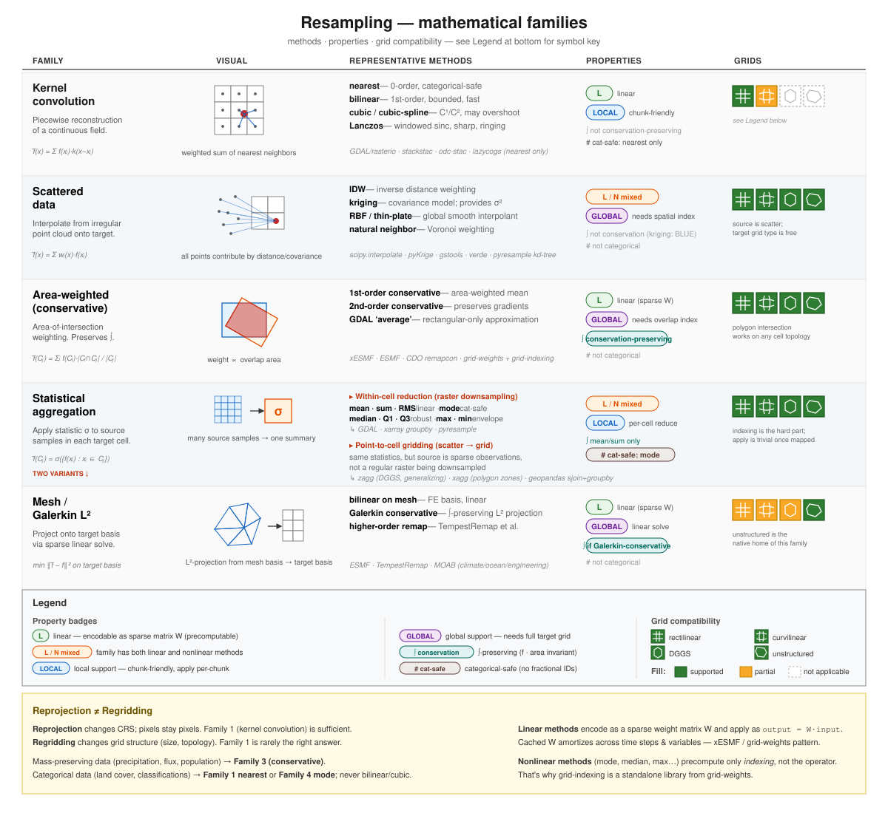
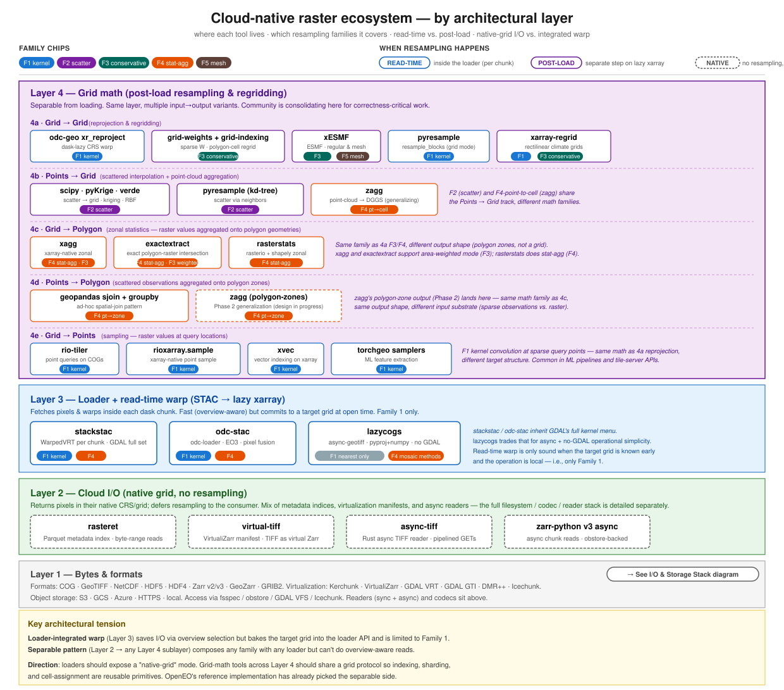

The cloud-native resampling ecosystem
Positioning, scope, and roadmap for this site
1. Why this page
The core of this site is a set of benchmarks for Web Mercator tile generation on continuous gridded data — a narrow, well-scoped slice of the “resampling” problem space. This page is the positioning layer underneath those benchmarks: it frames where they sit within the broader ecosystem of cloud-native geospatial resampling tooling, and it tracks what we plan to add so the site can grow into the broader survey it’s often treated as.
Two audiences:
- Practitioners choosing a resampling tool should read §2 (the math), §3 (the tool landscape), §4 (what these benchmarks actually measure), and §7 (a decision grid).
- People citing this site should read §4 and §8 to scope the citation correctly.
2. Mathematical families
“Resampling” collapses at least five mathematically distinct operations. Picking the wrong family is silent and common; the library can’t catch the error — only the user knows what the data means.

| Family | Operation | Key properties |
|---|---|---|
| F1 Kernel convolution | reconstruct a continuous field from samples, sample at target | linear, local, not conservation-preserving, only nearest is categorical-safe |
| F2 Scattered-data | irregular points → grid via distance/covariance weighting | mixed linearity, global, needs spatial index |
| F3 Conservative | area-weighted polygon intersection | linear (sparse W), global, preserves ∫ |
| F4 Statistical aggregation | apply σ to source samples per cell (two variants — see below) | mixed linearity, local, conservation for mean/sum, cat-safe for mode |
| F5 Mesh / Galerkin L² | project onto target basis by sparse linear solve | linear, global, can be conservative |
F4 is really two operations
- Within-cell reduction (raster downsampling) — source is a dense grid; statistics collapse contributing pixels. Tools: GDAL (mode/med/q1/q3/max/min/sum/rms), xarray groupby, pyresample.
- Point-to-cell gridding (scattered → grid) — source is sparse observations; statistics populate a grid from scratch. Tools: zagg (DGGS/generalizing), xagg (polygon zones), geopandas sjoin+groupby.
Same statistic family, different pipelines. Most libraries expose only one variant.
Cross-cutting axes
- Linearity: linear methods encode as a sparse weight matrix W and apply as
output = W · input; W caches across time steps and variables. Nonlinear methods (mode, median, max, quantile) cache only indexing, not the operator. This is why grid-indexing and grid-weights are separate libraries. - Support: local (kernel has finite support → chunk-friendly) vs. global (needs full target grid spec before weights can be built).
- Conservation: preserves ∫? F3 and F4-mean/sum only.
- Categorical safety: nearest (F1) and mode (F4) only. Bilinear/cubic/Lanczos on class IDs produces fractional nonsense.
Reprojection ≠ regridding
- Reprojection: change CRS, keep pixel semantics. F1 works.
- Regridding: change grid structure (size, topology). Mass-preserving data → F3. Categorical data → F1 nearest or F4 mode. Continuous data → F1 bilinear/cubic or F2.
Conflating the two is the source of most silent resampling errors.
3. Architectural layers

| Layer | Role | Exemplar tools |
|---|---|---|
| 1. Bytes & formats | COG, GeoTIFF, NetCDF, HDF5, HDF4, Zarr v2/v3, GeoZarr; virtualization formats (Kerchunk JSON/Parquet, VirtualiZarr manifest, GDAL VRT, GDAL GTI, DMR++); on cloud object storage | see the I/O & Storage Stack page for full detail |
| 2. Native-grid I/O | loaders that return pixels in native CRS, no resampling; sits atop a deep I/O stack (filesystem, codecs, readers, xarray backends) | rasteret, virtual-tiff, async-tiff, zarr-python v3 async · see I/O & Storage Stack |
| 3. Loader + read-time warp | integrated resampling per dask chunk; Family 1 only | stackstac, odc-stac, lazycogs |
| 4. Grid math (post-load) | separable from I/O; five input→output sublayers (see below) | see 4a–4e |
Layer 4 is a container for five parallel sublayers — same architectural layer, different input→output combinations. Each row has its own math, tooling, and use cases; they share only the “post-load, runs on a lazy xarray” pattern.
| Sublayer | Input → Output | Exemplar tools |
|---|---|---|
| 4a Grid → Grid | reprojection & regridding | odc-geo xr_reproject, grid-weights + grid-indexing, xESMF, pyresample (grid mode), xarray-regrid |
| 4b Points → Grid | scattered interp + point-cloud aggregation | scipy / pyKrige / verde, pyresample (kd-tree), zagg |
| 4c Grid → Polygon | zonal statistics on polygon geometries | xagg, exactextract, rasterstats |
| 4d Points → Polygon | scattered observations aggregated onto polygon zones | geopandas sjoin + groupby, zagg (polygon-zones, Phase 2) |
| 4e Grid → Points | sampling — raster values at query locations | rio-tiler, rioxarray.sample, xvec, torchgeo samplers |
Two architectural patterns in tension
- Loader-integrated warp (Layer 3) saves I/O via overview selection but bakes the target grid into the loader API and is limited to Family 1.
- Separable pattern (Layer 2 → any Layer 4 sublayer) composes any family with any loader; pays for I/O at native resolution but has no family restriction.
The Pangeo / OpenEO community is consolidating on the separable pattern for correctness-critical work. A Pangeo thread from Sep 2024 established that odc-geo.xr.xr_reproject is the current canonical tool for lazy, dask-aware CRS warp on xarray — and the OpenEO reference implementation uses it for resample_spatial. rioxarray.reproject() breaks laziness by calling GDAL synchronously on the full array; don’t use it for large cloud arrays.
4. Scope of current benchmarks
The benchmarks on this site measure a specific slice of the space above.
Tools profiled: rasterio, rioxarray, pyresample, xesmf, xesmfcached, odc-geo xr_reproject, xcube, geowombat, xcdat.
Datasets: MUR SST, GPM IMERG. Both continuous.
Workload: Web Mercator tile generation (Z0–6).
Metrics: wall-time + peak heap memory (memray / pyinstrument).
Variability axes: I/O backend (h5netcdf vs zarr-icechunk vs rasterio), storage (local vs S3), format optimizations (overviews, Zarr virtualization).
Current findings
- GDAL-backed tools dominate on speed + memory (odc-geo, rioxarray). Consistent across I/O backends.
- I/O choice matters more than algorithm. Virtualization + overviews beat algorithm micro-optimizations by factors of 2–20.
- xESMF is slowest without cached weights. With pre-computed weights it becomes competitive; without them it pays for weight construction every run.
- The lazy-vs-eager axis is hidden. Every run calls
.load()on the result, so the cost of dask graph construction vs. materialization is not isolated.
What these findings don’t say
The scope above means these benchmarks cannot speak to:
- F3 conservative regridding of mass-preserving data. GDAL-nearest/bilinear is fast but incorrect for precipitation, population density, or flux.
- Categorical data. Nearest at any non-matching scale silently corrupts land-cover statistics.
- Large-scale workloads. Z0–6 tiles are tens of MB; scaling behavior to full scenes, time-series stacks, or continental mosaics is untested.
- Async-native I/O paths.
lazycogs,async-tiff, and similar no-GDAL pipelines are not in the benchmark set. - Layer 4 sublayers beyond 4a. Points → grid (
zagg, scattered-data interp), grid → polygon zonal stats (xagg,exactextract,rasterstats), points → polygon aggregation, and grid → points sampling (rio-tiler,rioxarray.sample,xvec,torchgeosamplers) are all untested here. - Correctness. The site measures time and memory; whether two tools produce the same output for the same task is not verified.
5. Roadmap
What we plan to add, prioritized by impact on the breadth-of-authority the site is often cited for.
Tier 1 — closes the widest gap
- F3 conservation scenario with a conservation-error metric. Dataset candidate: GPCP precipitation or TerraClimate aggregated to a coarser target. Tools: xESMF conservative, grid-weights, xarray-regrid conservative, CDO remapcon, plus GDAL
averageas the rectangular approximation for contrast. Metric:|Σ input·area − Σ output·area| / Σ input·area. - Categorical scenario with class-frequency divergence. Dataset: ESA WorldCover or USDA CDL; downsample by 4×–10×. Tools: rasterio
nearest/mode, rioxarray, gdalwarp-r mode, xarray groupby-mode. Metric: KL divergence or histogram delta against a scale-aware reference. - Correctness as a first-class metric across all scenarios. MAE/RMSE for continuous (vs. GDAL warp with Lanczos as reference); conservation-error for mass-preserving; class-frequency divergence for categorical; gradient-magnitude artifacts for smooth reprojection.
Tier 2 — scope extensions
- Lazy-vs-eager isolation. Same tool, same data, run as lazy-constructed / dask-distributed-computed /
.load()ed. Directly serves the Pangeo thread above. - Scale axis. Full Sentinel-2 scene (10980² at 10 m), time-series stack (50–100 scenes), continental mosaic. Surfaces divergence that Z0–6 tiles hide.
- Async-native paths. Add
lazycogs(F1 nearest),async-tiff-backed experiments. Test whether removing GDAL’s threading/env complexity translates to throughput at scale. - Layer 4 sublayer benchmarks. Expand beyond 4a (grid → grid): add 4b Points → Grid (
zagg,pyresamplekd-tree,verde), 4c Grid → Polygon zonal stats (xagg,exactextract,rasterstats), 4d Points → Polygon (geopandas.sjoin + groupby), and 4e Grid → Points sampling (rio-tiler,rioxarray.sample,xvec,torchgeosamplers). Points/sec or samples/sec, memory, correctness vs. reference.
Tier 3 — delivered by this page
- Taxonomy overview. §2 and §3 above.
- Coverage matrix. §6 below.
- Recommendations table. §7 below.
- Explicit citation guidance. §8 below.
- Synthetic / no-auth dataset for CI and external contributors — planned alongside Tier 1.
6. Coverage matrix
Which tools are benchmarked today, and which families they can cover in principle. Green = benchmarked; yellow = exists in tool but not yet tested; grey = out of scope for the tool. The Sublayer column indicates where each tool primarily lives in Layer 4 (see Architectural layers); tools can appear in multiple sublayers where applicable.
| Tool | Sublayer | F1 kernel | F2 scatter | F3 conservative | F4 stat-agg | F5 mesh | Native-grid I/O |
|---|---|---|---|---|---|---|---|
| rasterio | 4a | ✅ | — | 🟡 (average) |
🟡 (mode, med) |
— | — |
| rioxarray | 4a | ✅ | — | 🟡 | 🟡 | — | — |
| odc-geo xr_reproject | 4a | ✅ | — | — | 🟡 | — | — |
| pyresample (grid mode) | 4a | ✅ | — | — | 🟡 | — | — |
| pyresample (kd-tree) | 4b | — | 🟡 | — | — | — | — |
| xESMF | 4a | 🟡 (bilinear) | — | 🟡 | — | 🟡 | — |
| xcube | 4a | ✅ | — | 🟡 | — | — | — |
| geowombat | 4a | ✅ | — | — | — | — | — |
| xcdat | 4a | ✅ | — | — | — | — | — |
| xarray-regrid | 4a | — | — | 🟡 | — | — | — |
| grid-weights + grid-indexing | 4a | — | — | 🟡 | — | — | — |
| scipy / pyKrige / verde | 4b | — | 🟡 | — | — | — | — |
| zagg | 4b (→ 4d in Phase 2) | — | — | — | 🟡 (pt→cell; pt→zone planned) | — | — |
| xagg | 4c | — | — | 🟡 (weighted mode) | 🟡 (zonal stats) | — | — |
| exactextract | 4c | — | — | 🟡 (exact weighted) | 🟡 (zonal stats) | — | — |
| rasterstats | 4c | — | — | — | 🟡 (zonal stats) | — | — |
| geopandas sjoin + groupby | 4d | — | — | — | 🟡 (pt→zone) | — | — |
| rio-tiler | 4e | 🟡 (sampling) | — | — | — | — | — |
| rioxarray.sample | 4e | 🟡 (sampling) | — | — | — | — | — |
| xvec | 4e | 🟡 (sampling) | — | — | — | — | — |
| torchgeo samplers | 4e | 🟡 (sampling) | — | — | — | — | — |
| lazycogs | Layer 3 | — | — | — | — | — | 🟡 |
| virtual-tiff | Layer 2 | — | — | — | — | — | 🟡 |
| rasteret | Layer 2 | — | — | — | — | — | 🟡 |
Right column covers Layer 2 (native-grid I/O). Yellow entries in the other columns are the bulk of the Tier 1/2 roadmap. Tools appear in one primary sublayer; some (e.g., pyresample, zagg) fan out across multiple sublayers and are listed in each.
7. Recommendations by data semantics
Picking a tool from the right family matters more than picking the fastest tool in a family.
| Data semantics | Target | Recommended tool(s) | Primary tradeoff |
|---|---|---|---|
| Continuous, CRS warp → tile output | Web Mercator tiles | odc-geo.xr_reproject or rioxarray.reproject |
GDAL speed; F1 only |
| Continuous, CRS warp → analysis-ready xarray | any | odc-geo.xr_reproject (lazy) |
separable, dask-aware; F1 only |
| Mass-preserving (precip, flux, population) → new grid | any | xESMF conservative (cached W), or grid-weights |
precompute cost amortizes across time |
| Mass-preserving → rectilinear climate grid | regular lat/lon | xarray-regrid conservative |
simpler API; rectilinear only |
| Categorical (land cover, classifications) | any scale change | only mode-capable tools; GDAL mode, rasterio, rioxarray |
correctness non-negotiable |
| Scattered observations → grid | any | pyresample kd-tree (IDW/nearest) or verde (spline/kriging) |
kriging gives σ²; IDW is cheaper |
| Scattered observations → DGGS | HEALPix, H3, S2 | zagg |
serverless fan-out; point-cloud scale |
| Scattered observations → polygon zones | any zones | zagg (Phase 2), or geopandas.sjoin + groupby for small data |
zagg scales; geopandas is local-only |
| Raster → polygon zonal stats | any polygon set | exactextract (fastest, exact), xagg (xarray-native), rasterstats (simple) |
exactextract for production; xagg for xarray workflows |
| Raster → point sampling (ML features, validation) | any query points | rioxarray.sample, xvec, rio-tiler (COGs), torchgeo samplers (ML) |
xvec is newest; torchgeo for ML pipelines |
| Legacy TIFFs → chunked / lazy-array access | virtual chunks via Zarr API | virtual-tiff |
zero-copy VirtualiZarr manifest over TIFF bytes |
| STAC archive → lazy xarray, tile-like output | small AOI | stackstac, odc-stac, or lazycogs (no-GDAL) |
read-time warp; F1 only |
8. How to cite this site
The site is at its most useful when cited with its scope made explicit.
Recommended framing: “Tile-generation benchmarks for Family 1 (kernel convolution) on continuous gridded data, targeting Web Mercator output.”
For a broader ecosystem review, cite this ecosystem.qmd page rather than an individual benchmark notebook. This page frames current scope, planned additions, and positions all the tools in a common taxonomy.
What to avoid: citing narrow time/memory findings as general claims about a tool’s correctness or fitness. “GDAL wins” is a true finding within the scope — it’s not a universal claim. Tools that the benchmark marks as “slow” (e.g., xESMF without cached weights) are often the only correct choice for workloads the benchmark doesn’t cover (mass-preserving regridding).
9. References
Ecosystem discussions
- Sean Harkins’ proposal for modular libraries (gist) — separating I/O, indexing, and resampling into composable Rust-based libraries; proposes a generic transform-aware indexing library and a chunkwise resampling library.
- Pangeo thread on lazy reprojection (Sep 2024) — community consensus on
odc-geo.xr.xr_reprojectfor lazy, dask-aware CRS warp.
Loader + read-time warp (Layer 3)
Native-grid I/O (Layer 2)
virtual-tiff— VirtualiZarr 2.0 manifest over TIFFs; zero-copy Zarr view.rasteret— pre-built Parquet metadata index; byte-range reads via obstore.
Layer 4a — Grid → Grid
odc-geo—GeoBoxabstraction;xr_reprojectfor lazy CRS warp.grid-indexing— Rust R*-tree cell-overlap indexing.grid-weights— area-weighted conservative regridding; uses grid-indexing.xESMF— ESMF-backed regridding for rectilinear and mesh.pyresample— kd-tree and resample_blocks backends (grid-mode entry here; kd-tree entry in 4b).xarray-regrid— rectilinear climate grid regridding.
Layer 4b — Points → Grid
pyresamplekd-tree — scattered-to-grid via nearest-neighbor or weighted kernels.scipy.interpolate— generic scatter interpolation (griddata, RBF).pyKrige— ordinary/universal kriging with σ² output.verde— spline- and greens-function-based gridding; Fatiando ecosystem.zagg— cloud-native point-cloud → DGGS aggregation; serverless fan-out. Generalizing to arbitrary output grids (Phase 2 → polygon zones, see Layer 4d).
Layer 4c — Grid → Polygon (zonal statistics)
xagg— xarray-native zonal aggregation; area-weighted mode available.exactextract— C++-backed exact polygon-raster intersection; fastest in class. Python bindings.rasterstats— rasterio + shapely zonal stats; simple pure-Python.
Layer 4d — Points → Polygon
geopandas.sjoin + groupby— ad-hoc spatial-join pattern; works for small-to-medium data.zagg(Phase 2 polygon-zones) — point-cloud → polygon aggregation with serverless fan-out.
Layer 4e — Grid → Points (sampling)
rio-tiler— point queries on COGs; tile-server-style API.rioxarray.sample— xarray-native point sampling from rasters.xvec— vector-geometry indexing on xarray; growing adoption.torchgeosamplers — ML feature-extraction workflow wrappers.